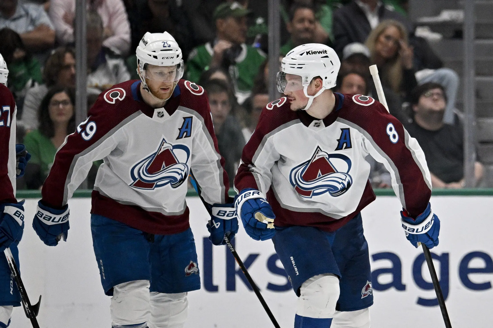
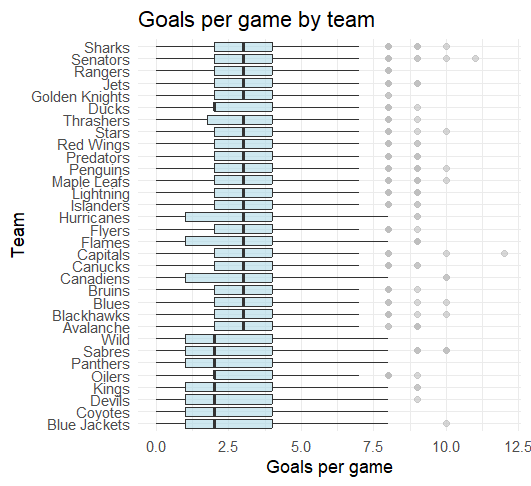
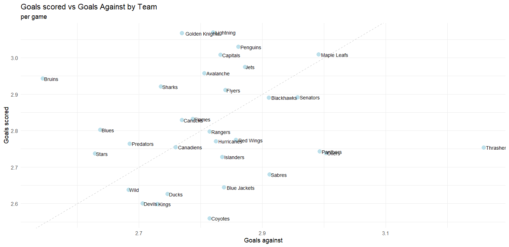
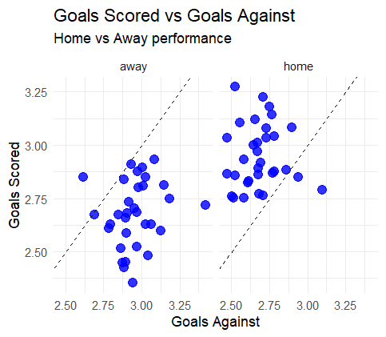
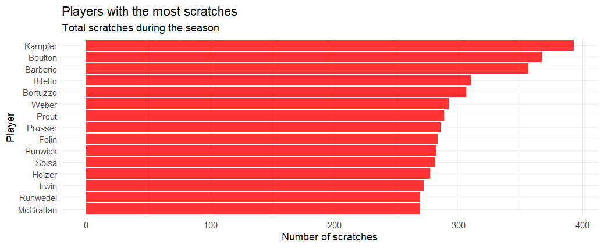
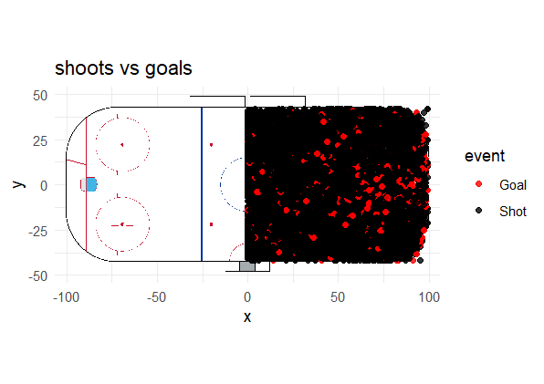
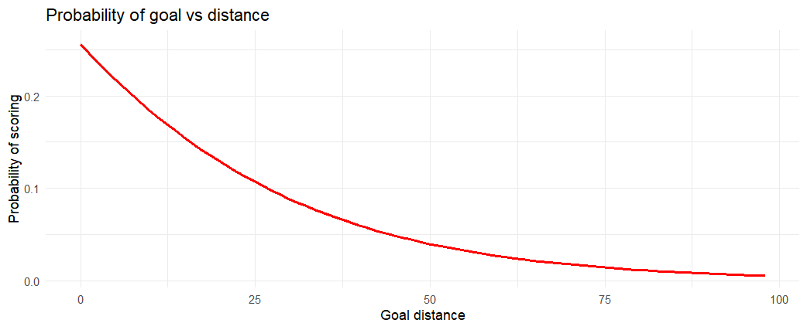
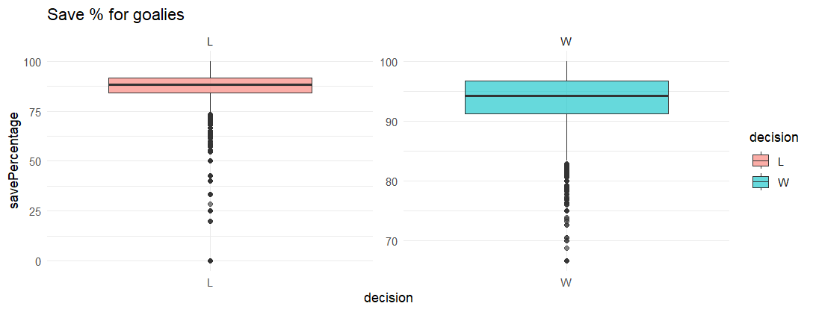
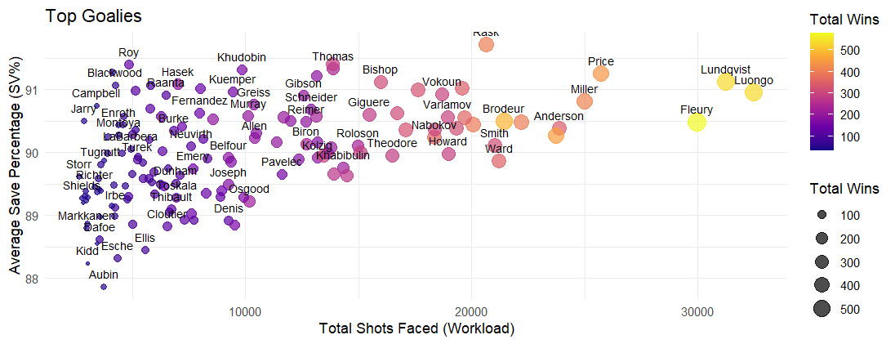
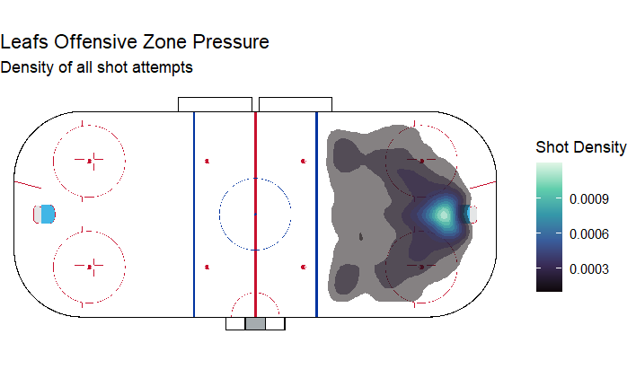

NHL Matches Analysis (2000-2019)

This time, I will analyze NHL game data using this dataset with R. Shoutout to the dataset creator! This is my first project in R after completing Udacity’s Data Analysis with R course, so I was pretty excited to start this project and show what I learned :).
Import the libraries and some .csv files
matches <- read.csv("game.csv")
teams <- read_csv("game_teams_stats.csv")
team_id <- read_csv("team_info.csv")
players <- read_csv("player_info.csv")
scratches <- read_csv("game_scratches.csv")
plays_shots <- read.csv("game_plays.csv")
library(ggplot2)
library(tidyverse)
library(sportyr)
pf_teams <- teams %>%
left_join(team_id, by = "team_id")
glimpse(pf_teams)
Goals per game
pf_teams %>%
filter(is.na(teamName)) %>%
select(team_id) %>%
distinct()
pf_teams_clean %>%
mutate(teamName = reorder(teamName, goals, median)) %>%
ggplot(aes(x = teamName, y = goals)) +
geom_boxplot(fill = "lightblue", alpha = 0.6, outlier.color = "grey") +
coord_flip() +
theme_minimal() +
labs(
title = "Goals per game by team",
x = "Team",
y = "Goals per game"
)

[GRAPH 1] Goals per game by team
Average scoring in the NHL tells only half the story. While most teams gravitate around 3.0 goals per game, the variance is where the real narrative lies.
Looking at newer or rebuilding franchises, we see a much wider 'spread' in their box plots compared to established contenders. Established teams have a 'floor' (They rarely get shut out). Newer teams often show a higher ceiling but a much lower floor, resulting in a more “boom-or-bust” scoring profile.
Goals scored rather than against
#filter the teams so no team plays against eo
pf_gf_ga <- pf_teams_clean %>%
select(game_id, team_id, teamName, goals) %>%
rename(goals_for = goals) %>%
left_join(
pf_teams_clean %>%
select(game_id, team_id, goals) %>%
rename(opponent_id = team_id,
goals_against = goals),
by = "game_id"
) %>%
filter(team_id != opponent_id)
team_gf_ga <- pf_gf_ga %>%
group_by(teamName) %>%
summarise(
avg_gf = mean(goals_for, na.rm = TRUE),
avg_ga = mean(goals_against, na.rm = TRUE),
gd = avg_gf - avg_ga,
games = n()
) %>%
ungroup()
team_gf_ga %>%
ggplot(aes(x = avg_ga, y = avg_gf)) +
geom_point(size = 3, alpha = 0.8, color = "lightblue") +
geom_abline(slope = 1, intercept = 0, linetype = "dashed", color = "grey") +
geom_text(aes(label = teamName), hjust = -0.1, size = 3) +
theme_minimal() +
labs(
title = "Goals scored vs Goals Against by Team",
subtitle = "per game",
x = "Goals against",
y = "Goals scored"
)

[GRAPH 2] Goals against vs scored.
This scatter plot provides a snapshot of team performance by comparing offensive output with defensive stability.
The Bruins, Lightning, and Golden Knights stand out by scoring at a high rate while keeping goals against relatively low.
In contrast, teams like the Oilers, Sabres, and Coyotes struggle to generate offense and put the puck in the net consistently.
The Toronto Maple Leafs score plenty of goals but also allow a significant number, resulting in high-scoring and volatile games.
Home or Away?
team_home_away <- pf_home_away %>%
group_by(teamName, HoA) %>%
summarise(
avg_gf = mean(goals_for, na.rm = TRUE),
avg_ga = mean(goals_against, na.rm = TRUE),
gd = avg_gf - avg_ga,
games = n(),
.groups = "drop"
)
ggplot(team_home_away, aes(avg_ga, avg_gf)) +
geom_point(size = 3, alpha = 0.8, color = "blue") +
geom_abline(slope = 1, intercept = 0, linetype = "dashed") +
facet_wrap(~ HoA) +
theme_minimal() +
labs(
title = "Goals For vs Goals Against",
subtitle = "Home vs Away performance",
x = "Goals Against",
y = "Goals For"
)

[GRAPH 3] Goals per game by team
This visualization compares team offensive output and defensive stability, separated by home and away games.
Teams generally perform better at home, scoring more goals while conceding fewer, highlighting a clear home-ice advantage. Away performances tend to be tighter and closer to the break-even line, suggesting more conservative play and greater difficulty in controlling games on the road.
Some teams emerge as outliers, displaying stronger performance away from home than at home, and vice versa, indicating that home-ice advantage is not uniform across all teams.
Who had more bad luck?
pf_player_scratches <- scratches %>%
left_join(players, by = "player_id")
player_scratches <- pf_player_scratches %>%
group_by(player_id, lastName, primaryPosition) %>%
summarise(
total_scratches = n(),
games_affected = n_distinct(game_id),
.groups = "drop"
) %>%
arrange(desc(total_scratches))
top_scratched_players <- player_scratches %>%
slice_max(total_scratches, n = 15)
top_scratched_players %>%
ggplot(aes(x = reorder(lastName , total_scratches),
y = total_scratches)) +
geom_col(fill = "red", alpha = 0.8) +
coord_flip() +
theme_minimal() +
labs(
title = "Players with the most scratches",
subtitle = "Total scratches during the season",
x = "Player",
y = "Number of scratches"
)

[GRAPH 4] Top scratched players.
Faceoff %
pf_teams %>%
filter(!is.na(teamName)) %>%
ggplot(aes(x = teamName, y = faceOffWinPercentage)) +
geom_boxplot(fill = "lightpink", alpha = 0.7) +
coord_flip() +
theme_minimal() +
labs(
title = "Distribution of Faceoff Win Percentage",
x = "Team",
y = "Faceoff win %"
)

[GRAPH 5] Faceoff % per team.
Most teams cluster around a faceoff win percentage between 45% and 55%, showing league-wide parity.
Shoots vs Goals
pf_plays_shots <- plays_shots %>%
filter(event %in% c("Shot", "Goal")) %>%
mutate(st_x = as.numeric(st_x),
st_y = as.numeric(st_y)) %>%
filter(!is.na(st_x) & !is.na(st_y))
geom_hockey(league = "NHL") +
geom_point(data = pf_plays_shots,
aes(x = abs(st_x), y = st_y, color = event),
alpha = 0.8) +
scale_color_manual(values = c("Goal" = "red", "Shot" = "black")) +
labs(title = "shoots vs goals") +
theme_minimal()

[GRAPH 6] Shoots vs Goals heatmap.
This visualization was built using the
A clear concentration of goals appears directly in front of the goalie. To verify whether this pattern is statistically meaningful, I estimated the probability of scoring from shots taken from central, straight-on positions.
pf_plays_dist <- pf_plays_shots %>%
mutate(
dist_arco = sqrt((abs(st_x) - 89)^2 + (st_y)^2),
es_gol = ifelse(event == "Goal", 1, 0)
)
dist_por_equipo <- pf_plays_dist %>%
group_by(team_id_for) %>%
summarise(
dist_media = mean(dist_arco, na.rm = TRUE),
total_tiros = n()
) %>%
left_join(team_id, by = c("team_id_for" = "team_id")) %>%
arrange(desc(dist_media))
ggplot(pf_plays_dist, aes(x = dist_arco, y = es_gol)) +
geom_smooth(method = "glm", method.args = list(family = "binomial"), color = "red") +
labs(
title = "Probability of goal vs distance",
x = "Goal distance",
y = "Probability of scoring"
) +
theme_minimal()

[GRAPH 7] Goal vs Distance curve.
Shot distance was made using rink coordinates and modeled against goal outcomes using a logistic regression. The resulting curve shows a clear non-linear decay in scoring probability as distance from the net increases.
Save % for goalies
goalies <- read.csv("game_goalie_stats.csv")
ggplot(goalies %>% filter(decision %in% c("W", "L")),
aes(x = decision, y = savePercentage, fill = decision)) +
geom_boxplot(alpha = 0.6) +
facet_wrap(~decision, scales = "free") +
theme_minimal() +
labs(title = "Save % for goalies")

[GRAPH 8] Boxplot of goalies save percentage.
Goalies tend to post higher and more consistent save percentages in wins compared to losses, indicating a strong association between goaltending performance and game outcomes.
Losses exhibit a wider spread and more extreme low outliers, reflecting games where goaltending performance breaks down and becomes a limiting factor.
Top Goalies
goalie_ranking <- goalies %>%
group_by(player_id) %>%
summarise(
total_shots_faced = sum(shots, na.rm = TRUE),
avg_sv_pct = mean(savePercentage, na.rm = TRUE),
total_wins = sum(decision == "W", na.rm = TRUE),
gaa = (sum(goals, na.rm = TRUE) / (sum(timeOnIce, na.rm = TRUE) / 60)) * 60,
gp = n(),
.groups = "drop"
) %>%
left_join(players, by = "player_id") %>%
filter(gp > 100)
ggplot(goalie_ranking, aes(x = total_shots_faced, y = avg_sv_pct)) +
geom_point(aes(size = total_wins, color = total_wins), alpha = 0.7) +
geom_text(aes(label = lastName), vjust = -1, size = 3, check_overlap = TRUE) +
scale_color_viridis_c(option = "plasma") +
theme_minimal() +
labs(
title = "Top Goalies",
x = "Total Shots Faced (Workload)",
y = "Average Save Percentage (SV%)",
size = "Total Wins",
color = "Total Wins"
)

[GRAPH 9] Most efficient goalies chart.
I decided to take a closer look at the best goalies, as it is my favorite position in hockey.
While save percentage generally declines as workload increases, top-performing goalies remain above league averages despite facing a high volume of shots.
At the top left of our chart, you can see names like Dominik Hasek and Patrick Roy. These goalies represent the gold standard for efficiency. They maintained elite save percentage levels, but their "Total Shots Faced" on this specific scale is lower than the modern workhorses.
On the other hand, Fleury, while slightly lower in save percentage, shows his value through his total wins, proving that volume and winning often go hand-in-hand even if efficiency fluctuates. Exactly what you would expect from a first overall pick as a goalie.
Leafs Offensive Zone Heatmap
leafs_shots <- pf_plays_shots %>%
filter(team_id_for == 10)
geom_hockey(league = "NHL", display_range = "offensive") +
stat_density_2d(data = leafs_shots,
aes(x = abs(st_x), y = st_y, fill = ..level..),
geom = "polygon", alpha = 0.5) +
scale_fill_viridis_c(option = "mako") +
labs(title = "Leafs Offensive Zone Pressure",
subtitle = "Density of all shot attempts",
fill = "Shot Density")

[GRAPH 10] Leafs shot density heatmap.
This heatmap shows the density of all shot attempts generated by the Leafs in the offensive zone, highlighting areas where sustained pressure is most frequently applied.
The highest density (the light blue area) is located directly in the low slot, right in front of the net. This is excpected since most goals from the league are from there (As showed in Graph 6)
You can see that it seems like there is a "V" shape. The pressure fans out toward the faceoff circles. This suggests a heavy cycle game where the puck moves from the corners to the slot or back to the defenders.
Leafs Shooting Efficiency
leafs_efficiency <- pf_plays_shots %>%
filter(!is.na(secondaryType)) %>%
mutate(is_leafs = ifelse(team_id_for == 10, "Maple Leafs", "Rest of NHL")) %>%
group_by(is_leafs, secondaryType) %>%
summarise(
success_rate = sum(event == "Goal") / n() * 100,
.groups = "drop"
)
ggplot(leafs_efficiency, aes(x = reorder(secondaryType, success_rate), y = success_rate, fill = is_leafs)) +
geom_bar(stat = "identity", position = "dodge") +
coord_flip() +
scale_fill_manual(values = c("Maple Leafs" = "darkblue", "Rest of NHL" = "grey")) +
labs(title = "Shooting Efficiency: Leafs vs NHL Average",
x = "Shot Type", y = "Goal Conversion %") +
theme_minimal()

[GRAPH 10] Leafs shooting comparative with the rest of the NHL.
This chart compares shot-type goal conversion rates between the Toronto Maple Leafs and the rest of the NHL.
The Leafs high deflection rate means they don't necessarily need a "clean" shot to score; they just need to get the puck toward the net when bodies are in the way. They underperform the NHL average on Tip-ins, which may indicate fewer structured point shots with intentional redirections or less sustained screen presence during set plays.
Conclusion and Final Thoughts
This project reflects my first analytical work in R, combining data cleaning, feature engineering, visualization, and interpretation. While the analysis is descriptive rather than predictive, it establishes a strong foundation for more advanced modeling approaches such as expected goals, game-state adjustments, or player-level impact metrics.
The Toronto Maple Leafs case study highlights how team identity and tactical choices can be inferred directly from data, while the goaltender analysis showcases some of the most prestigious goalies in NHL history and the trade-off between efficiency and workload.
Thank you for reading! Go Leafs Go!
Last edited: —